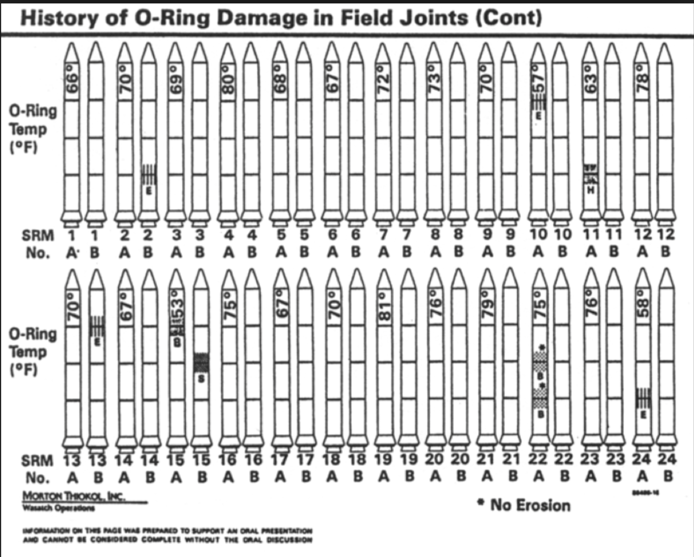

import matplotlib.pyplot as plt
import numpy as np
fig, axes = plt.subplots(2, 2, figsize=(8, 7), gridspec_kw={'wspace': 0.4, 'hspace': 0.4})
# Proximity
for i in range(3):
axes[0, 0].scatter(np.full(5, i * 2), np.arange(5), s=200, color='blue')
axes[0, 0].set_title("Proximity")
axes[0, 0].set_xticks([]); axes[0, 0].set_yticks([])
# Similarity
for i in range(3):
axes[0, 1].scatter(np.full(5, i * 2), np.arange(5), s=200, color=['blue', 'red'][i % 2])
axes[0, 1].set_title("Similarity")
axes[0, 1].set_xticks([]); axes[0, 1].set_yticks([])
# Unconnected points
x, y = [1, 2, 3, 4, 5], [2, 4, 1, 3, 5]
axes[1, 0].plot(x, y, 'o', color='blue')
axes[1, 0].set_title("Unconnected Points")
axes[1, 0].set_xticks([]); axes[1, 0].set_yticks([])
# Connected points
axes[1, 1].plot(x, y, 'o-', color='blue')
axes[1, 1].set_title("Connected Points")
axes[1, 1].set_xticks([]); axes[1, 1].set_yticks([])
plt.show()1 Introduction
1.1 What Is Data Science?
Data science is a multifaceted field, often conceptualized as resting on three fundamental pillars: mathematics/statistics, computer science, and domain-specific knowledge. This framework helps to underscore the interdisciplinary nature of data science, where expertise in one area is often complemented by foundational knowledge in the others.
A compelling definition was offered by Prof. Bin Yu in her 2014 Presidential Address to the Institute of Mathematical Statistics. She defines \[\begin{equation*} \mbox{Data Science} = \mbox{S}\mbox{D}\mbox{C}^3, \end{equation*}\] where
- ‘S’ represents Statistics, signifying the crucial role of statistical methods in understanding and interpreting data;
- ‘D’ stands for domain or science knowledge, indicating the importance of specialized expertise in a particular field of study;
- the three ’C’s denote computing, collaboration/teamwork, and communication to outsiders.
Computing underscores the need for proficiency in programming and algorithmic thinking, collaboration/teamwork reflects the inherently collaborative nature of data science projects, often requiring teams with diverse skill sets, and communication to outsiders emphasizes the importance of translating complex data insights into understandable and actionable information for non-experts.
This definition neatly captures the essence of data science, emphasizing a balance between technical skills, teamwork, and the ability to communicate effectively.
1.2 Expectations from This Course
In this course, students will be expected to achieve the following outcomes:
Proficiency in Project Management with Git: Develop a solid understanding of Git for efficient and effective project management. This involves mastering version control, branching, and collaboration through this powerful tool.
Proficiency in Project Reporting with Quarto: Gain expertise in using Quarto for professional-grade project reporting. This encompasses creating comprehensive and visually appealing reports that effectively communicate your findings.
Hands-On Experience with Real-World Data Science Projects: Engage in practical data science projects that reflect real-world scenarios. This hands-on approach is designed to provide you with direct experience in tackling actual data science challenges.
Competency in Using Python and Its Extensions for Data Science: Build strong skills in Python, focusing on its extensions relevant to data science. This includes libraries like Pandas, NumPy, and Matplotlib, among others, which are critical for data analysis and visualization.
Full Grasp of the Meaning of Results from Data Science Algorithms: Learn to not only apply data science algorithms but also to deeply understand the implications and meanings of their results. This is crucial for making informed decisions based on these outcomes.
Basic Understanding of the Principles of Data Science Methods: Acquire a foundational knowledge of the underlying principles of various data science methods. This understanding is key to effectively applying these methods in practice.
Commitment to the Ethics of Data Science: Emphasize the importance of ethical considerations in data science. This includes understanding data privacy, bias in data and algorithms, and the broader social implications of data science work.
1.3 Computing Environment
All setups are operating system dependent. As soon as possible, stay away from Windows. Otherwise, good luck (you will need it).
1.3.1 Operating System
Your computer has an operating system (OS), which is responsible for managing the software packages on your computer. Each operating system has its own package management system. For example:
Linux: Linux distributions have a variety of package managers depending on the distribution. For instance, Ubuntu uses APT (Advanced Package Tool), Fedora uses DNF (Dandified Yum), and Arch Linux uses Pacman. These package managers are integral to the Linux experience, allowing users to install, update, and manage software packages easily from repositories.
macOS: macOS uses Homebrew as its primary package manager. Homebrew simplifies the installation of software and tools that aren’t included in the standard macOS installation, using simple commands in the terminal.
Windows: Windows users often rely on the Microsoft Store for apps and software. For more developer-focused package management, tools like Chocolatey and Windows Package Manager (Winget) are used. Additionally, recent versions of Windows have introduced the Windows Subsystem for Linux (WSL). WSL allows Windows users to run a Linux environment directly on Windows, unifying Windows and Linux applications and tools. This is particularly useful for developers and data scientists who need to run Linux-specific software or scripts. It saves a lot of trouble Windows users used to have that users previously faced before WSL was introduced.
Understanding the package management system of your operating system is crucial for effectively managing and installing software, especially for data science tools and applications.
1.3.2 File System
A file system is a fundamental aspect of a computer’s operating system, responsible for managing how data is stored and retrieved on a storage device, such as a hard drive, SSD, or USB flash drive. Essentially, it provides a way for the OS and users to organize and keep track of files. Different operating systems typically use different file systems. For instance, NTFS and FAT32 are common in Windows, APFS and HFS+ in macOS, and Ext4 in many Linux distributions. Each file system has its own set of rules for controlling the allocation of space on the drive and the naming, storage, and access of files, which impacts performance, security, and compatibility. Understanding file systems is crucial for tasks such as data recovery, disk partitioning, and managing file permissions, making it an important concept for anyone working with computers, especially in data science and IT fields.
Navigating through folders in the command line, especially in Unix-like environments such as Linux or macOS, and Windows Subsystem for Linux (WSL), is an essential skill for effective file management. The command cd (change directory) is central to this process. To move into a specific directory, you use cd followed by the directory name, like cd Documents. To go up one level in the directory hierarchy, you use cd ... To return to the home directory, simply typing cd or cd ~ will suffice. The ls command lists all files and folders in the current directory, providing a clear view of your options for navigation. Mastering these commands, along with others like pwd (print working directory), which displays your current directory, equips you with the basics of moving around the file system in the command line, an indispensable skill for a wide range of computing tasks in Unix-like systems.
1.3.3 Command Line Interface
On Linux or MacOS, simply open a terminal.
On Windows, several options can be considered.
- Windows Subsystem Linux (WSL): https://learn.microsoft.com/en-us/windows/wsl/
- Cygwin (with X): https://x.cygwin.com
- Git Bash: https://www.gitkraken.com/blog/what-is-git-bash
To jump-start, here is a tutorial: Ubuntu Linux for beginners.
At least, you need to know how to handle files and traverse across directories. The tab completion and introspection supports are very useful.
Here are several commonly used shell commands:
cd: change directory;..means parent directory.pwd: present working directory.ls: list the content of a folder;-llong version;-ashow hidden files;-tordered by modification time.mkdir: create a new directory.cp: copy file/folder from a source to a target.mv: move file/folder from a source to a target.rm: remove a file a folder.
1.3.4 Python
Set up Python on your computer:
- Python 3.
- Python package manager miniconda or pip.
- Integrated Development Environment (IDE) (Jupyter Notebook; RStudio; VS Code; Emacs; etc.)
I will be using VS Code in class.
Readability is important! Check your Python coding style against the recommended styles: https://peps.python.org/pep-0008/. A good place to start is the Section on “Code Lay-out”.
Online books on Python for data science:
- “Python Data Science Handbook: Essential Tools for Working with Data,” First Edition, by Jake VanderPlas, O’Reilly Media, 2016.
- “Python for Data Analysis: Data Wrangling with Pandas, NumPy, and IPython.” Third Edition, by Wes McKinney, O’Reilly Media, 2022.
1.4 Data Science Ethics
1.4.1 Introduction
Ethics in data science is a fundamental consideration throughout the lifecycle of any project. Data science ethics refers to the principles and practices that guide responsible and fair use of data to ensure that individual rights are respected, societal welfare is prioritized, and harmful outcomes are avoided. Ethical frameworks like the Belmont Report (Protection of Human Subjects of Biomedical & Research, 1979)} and regulations such as the Health Insurance Portability and Accountability Act (HIPAA) (Health & Services, 1996) have established foundational principles that inspire ethical considerations in research and data use. This section explores key principles of ethical data science and provides guidance on implementing these principles in practice.
1.4.2 Principles of Ethical Data Science
1.4.2.1 Respect for Privacy
Safeguarding privacy is critical in data science. Projects should comply with data protection regulations, such as the General Data Protection Regulation (GDPR) or the California Consumer Privacy Act (CCPA). Techniques like anonymization and pseudonymization must be applied to protect sensitive information. Beyond legal compliance, data scientists should consider the ethical implications of using personal data.
The principles established by the Belmont Report emphasize respect for persons, which aligns with safeguarding individual privacy. Protecting privacy also involves limiting data collection to what is strictly necessary. Minimizing the use of identifiable information and implementing secure data storage practices are essential steps. Transparency about how data is used further builds trust with stakeholders.
1.4.2.2 Commitment to Fairness
Bias can arise at any stage of the data science pipeline, from data collection to algorithm development. Ethical practice requires actively identifying and addressing biases to prevent harm to underrepresented groups. Fairness should guide the design and deployment of models, ensuring equitable treatment across diverse populations.
To achieve fairness, data scientists must assess datasets for representativeness and use tools to detect potential biases. Regular evaluation of model outcomes against fairness metrics helps ensure that systems remain non-discriminatory. The Americans with Disabilities Act (ADA) (Congress, 1990) provides a legal framework emphasizing equitable access, which can inspire fairness in algorithmic design. Collaborating with domain experts and stakeholders can provide additional insights into fairness issues.
1.4.2.3 Emphasis on Transparency
Transparency builds trust and accountability in data science. Models should be interpretable, with clear documentation explaining their design, assumptions, and decision-making processes. Data scientists must communicate results in a way that stakeholders can understand, avoiding unnecessary complexity or obfuscation.
Transparent practices include providing stakeholders access to relevant information about model performance and limitations. The Federal Data Strategy (Team, 2019) calls for transparency in public sector data use, offering inspiration for practices in broader contexts. Visualizing decision pathways and using tools like LIME or SHAP can enhance interpretability. Establishing clear communication protocols ensures that non-technical audiences can engage with the findings effectively.
1.4.2.5 Adherence to Professional Integrity
Professional integrity underpins all ethical practices in data science. Adhering to established ethical guidelines, such as those from the American Statistical Association (ASA) ((ASA), 2018), ensures accountability. Practices like maintaining informed consent, avoiding data manipulation, and upholding rigor in analyses are essential for maintaining public trust in the field.
Ethical integrity also involves fostering a culture of honesty and openness within data science teams. Peer review and independent validation of findings can help identify potential errors or biases. Documenting methodologies and maintaining transparency in reporting further strengthen trust.
1.4.3 Ensuring Ethics in Practice
1.4.3.1 Building Ethical Awareness
Promoting ethical awareness begins with education and training. Institutions should integrate ethics into data science curricula, emphasizing real-world scenarios and decision-making. Organizations should conduct regular training to ensure their teams remain informed about emerging ethical challenges.
Workshops and case studies can help data scientists understand the complexities of ethical decision-making. Providing access to resources, such as ethical guidelines and tools, supports continuous learning. Leadership support is critical for embedding ethics into organizational culture.
1.4.3.2 Embedding Ethics in Workflows
Ethics must be embedded into every stage of the data science pipeline. Establishing frameworks for ethical review, such as ethics boards or peer-review processes, helps identify potential issues early. Tools for bias detection, explainability, and privacy protection should be standard components of workflows.
Standard operating procedures for ethical reviews can formalize the consideration of ethics in project planning. Developing templates for documenting ethical decisions ensures consistency and accountability. Collaboration across teams enhances the ability to address ethical challenges comprehensively.
1.4.3.3 Establishing Accountability Mechanisms
Clear accountability mechanisms are essential for ethical governance. This includes maintaining documentation for all decisions, establishing audit trails, and assigning responsibility for the outputs of data-driven systems. Organizations should encourage open dialogue about ethical concerns and support whistleblowers who raise issues.
Periodic audits of data science projects help ensure compliance with ethical standards. Organizations can benefit from external reviews to identify blind spots and improve their practices. Accountability fosters trust and aligns teams with ethical objectives.
1.4.3.4 Engaging Stakeholders
Ethical data science requires collaboration with diverse stakeholders. Including perspectives from affected communities, policymakers, and interdisciplinary experts ensures that projects address real needs and avoid unintended consequences. Stakeholder engagement fosters trust and aligns projects with societal values.
Public consultations and focus groups can provide valuable feedback on the potential impacts of data science projects. Engaging with regulators and advocacy groups helps align projects with legal and ethical expectations. Transparent communication with stakeholders builds long-term relationships.
1.4.3.5 Continuous Improvement
Ethics in data science is not static; it evolves with technology and societal expectations. Continuous improvement requires regular review of ethical practices, learning from past projects, and adapting to new challenges. Organizations should foster a culture of reflection and growth to remain aligned with ethical best practices.
Establishing mechanisms for feedback on ethical practices can identify areas for development. Sharing lessons learned through conferences and publications helps the broader community advance its understanding of ethics in data science.
1.4.4 Conclusion
Data science ethics is a dynamic and integral aspect of the discipline. By adhering to principles of privacy, fairness, transparency, social responsibility, and integrity, data scientists can ensure their work contributes positively to society. Implementing these principles through structured workflows, stakeholder engagement, and continuous improvement establishes a foundation for trustworthy and impactful data science.
1.5 Effective Data Communication
By Amer El Zein.
This post is inspired by Cole Nussbaumer Knaflic’s Storytelling with Data which provides a comprehensive guide on selecting and designing effective visualizations.
1.5.1 Why Data Communication Is Crucial
As data scientists, our primary goal is to extract actionable insights from data. However, the effectiveness of our analysis is often undermined by poor communication. In a world inundated with information, the ability to convey insights clearly and effectively is paramount.
Poor communication isn’t just inconvient; it can be catastrophic.
1.5.2 The Challenger Disaster: A Tragic case of Miscommunication
Let’s consider a sobering example: the Challenger shuttle disaster. Engineers had access to data about O-ring failures and cold temperatures. But the visualizations were unable to demonstrate them.
1.5.3 Visuals from the Challenger Launch Review
1.5.3.1 Figure 1: O-Ring Incidents vs. Temperature

This scatter plot was presented to NASA leadership to illustrate the number of O-ring damage incidents at different launch temperatures.
While it appears objective and data-driven, the graph is misleading for several key reasons:
- It includes only missions with reported damage, omitting those where no damage occurred.
- This omission hides the full distribution, masking the correlation between lower temperatures and higher failure rates.
- There are no clear trend lines, threshold indicators, or risk annotations to guide interpretation
- It is incredibly confusing to read, while it may relay positional damage, understanding the severity of the damage and even the premise of the graph is incredibly difficult at first attempts.
This graph failed to convey the critical risk of launching in cold weather—particularly at the forecasted 23°F, well below any previously tested temperature.
1.5.3.2 Figure 2: History of O-Ring Damage (Decorative Rocket Diagram)
This visual uses stylized rockets to represent previous missions and marks erosion (E), blow-by (B), and heat-related (H) incidents across rocket joints.
However, despite being visually dense, the graphic has several flaws:
- It’s decorative rather than analytical—more like clip art than a functional chart.
- There is no axis, no aggregation, or visualization of risk trends.
- The symbols (
E,B,H) are not fully explained, and their visual hierarchy is unclear. - It only demosntrates failed attempts, by omitting successes, readers were unable to view a trend of failure under a certain temperature
In short, this chart fails to tell the story. The data is present, but there’s no narrative, no framing of risk, and no direct call to action.
These two visuals—despite being based on real data—demonstrate how data without clear communication can mislead decision-makers at critical moments.
The rest of this blog post will focus on best practices for data communication, such that we can avoid such catastrophic miscommucations, born from a misunderstanding of how to convey critical insights
1.5.4 Core Principles of Effective Data Communication
1.5.4.1 1. Know Your Audience
Different stakeholders require different levels of detail, tone, and framing.
Audience Type | Communication Style |
||| | General Audience | Simple explanations, real-world analogies, strong visual cues | | Executives | Focus on ROI, strategic insights, and key decisions | | Technical Teams | Emphasize accuracy, methodology, and reproducibility |
Ask yourself:
If they remember only one thing, what should it be?
1.5.4.2 2. Match the Message to the Medium
Not all communication channels are created equal.
Presentations | Reports & Emails |
|–|| | Time-constrained | Asynchronous & referenceable | | Interactive Q&A possible | Limited feedback loop | | Visual storytelling focus | Detailed and structured |
Rule of thumb: The more control you have in the room, the less text you need on screen.
1.5.4.3 3. Structure Your Data Like a Story
Humans are wired to respond to stories. Think of your analysis as a narrative:
- Context – What are we trying to solve?
- Conflict – What’s at stake?
- Climax – What does the data reveal?
- Conclusion – What should we do?
Use visuals as narrative beats—not just as background noise. By nestling them in narratives, they’re more likely to stick within the minds of the audience, as well as be more comprehensible. The narrative should be introduced and explained, alternatives should be outlined, and your final recommendations should be justified at the end of the work.
1.5.5 Visual Design: Make the Message Clear
When communicating with data, how your charts look is just as important as what they show. Good visual design doesn’t mean decoration—it means clarity.
1.5.5.1 Gestalt Principles in Visualization
Gestalt principles explain how humans naturally group visual elements. You can use them to guide attention, highlight relationships, and reduce cognitive load.
1.5.5.1.1 1. Proximity
- Objects that are close together are perceived as belonging to the same group.
- Use spacing to group related data points or labels. Elements placed near each other will be seen as connected—even without lines or boxes. For example: in a scatterplot, clustering points together can help imply a category or trend without explicitly stating it.
1.5.5.1.2 2. Similarity
- Items that look similar (in shape, color, size, etc.) are perceived as part of the same group.
- Consistent formatting helps create visual categories. For example, using the same color for bars from the same group reinforces their connection. For example: In a line chart with multiple series, color or marker shape can distinguish different groups while maintaining coherence.
1.5.5.1.3 3. Connectedness
- When elements are visually connected by lines or paths, they are perceived as related—even if they’re spaced apart.
- Connecting data points with lines (like in a line chart) strongly implies continuity, sequence, or progression. For example: when using time-series, connecting points in order helps the audience see a trend over time.
1.5.5.1.4 4. Continuity
- The eye naturally follows paths, lines, or curves, and continues along them.
- Smooth lines or aligned elements guide the viewer’s eye through the visual, helping emphasize flow or direction, when constructing visualizations, remain cognizant that movement in a chart—like a trend line—supports storytelling by guiding attention from left to right.
1.5.6 Choosing the Right Chart
Not all charts are created equal. Here’s a brief guide to common types of charts and when to use them.
1.5.6.1 Line Charts
These are often the best for showing trends, patterns and changes over time.
Use when:
- Your x-axis represents a continuous variable (like time, distance, or temperature).
- You want to emphasize upward/downward trends, volatility, or cycles.
Best Practices: - Use minimal gridlines and tick marks.
Highlight key changes with annotations or color.
Avoid too many lines—stick to 3–4 series max to reduce clutter.
Use consistent intervals on the x-axis.
x = np.arange(1, 11)
y1 = np.random.randint(40, 80, size=10)
y2 = y1 + np.random.randint(-10, 10, size=10)
plt.figure(figsize=(6, 3))
plt.plot(x, y1, marker='o', label='Series A')
plt.plot(x, y2, marker='s', linestyle='--', label='Series B')
plt.title("Line Chart Example")
plt.xlabel("Time"); plt.ylabel("Value")
plt.legend(); plt.show()1.5.6.2 Bar Charts:
Best for: Comparing values across discrete categories.
Use when:
Your categories are nominal (e.g., product names, regions).
You want to emphasize differences between groups.
Best Practices:
Use horizontal bars if category names are long.
Sort bars by value to help viewers scan quickly.
Use consistent spacing and avoid 3D effects.
Use one color per category unless emphasizing comparison.
Always start the Y-Axis at 0
categories = ["McRonalds", "Burger Prince", "Crisp-Fil-A", "Marcie's"]
values = [1600, 1200, 1800, 1100]
plt.bar(categories, values, color='royalblue', edgecolor='black')
plt.title("Calories per Fast Food Chain")
plt.ylabel("kCal"); plt.ylim(0, 2000)
plt.show()
1.5.6.3 Scatter & Bubble Charts
Best for: Displaying relationships between two (or three) continuous variables.
Use when:
You want to explore correlations, clusters, or outliers.
You want to show the distribution of observations.
You can encode a third variable with bubble size or color.
Best Practices: - Label outliers if they carry special meaning.
Use transparency for overlapping points.
Add a trend line if you want to show linear correlation.
Keep axis ranges consistent for accurate interpretation.
np.random.seed(42)
products_sold = np.random.randint(100, 1800, 20)
revenue = np.random.randint(1000, 200000, 20)
product_price = np.random.randint(50, 500, 20)
plt.scatter(products_sold, revenue, s=product_price * 5, alpha=0.6, edgecolors='black')
plt.xlabel("Products Sold"); plt.ylabel("Revenue (USD)")
plt.title("Sales Performance (Bubble Chart)"); plt.show()1.5.6.4 Tables
Best for: Displaying precise values, multi-unit comparisons, or rich metadata.
Use when:
Users need to look up specific values.
You’re reporting multiple metrics across categories.
Best Practices: - Use zebra striping to improve scan-ability.
Limit columns to 4–6 for readability.
Right-align numbers and left-align text.
Highlight important rows/columns with bold or color.
import pandas as pd
df = pd.DataFrame({
"Client": ["Adam", "Cate", "David", "Amer", "Markus"],
"Spent ($)": [310.12, 106.74, 1299.99, 480.38, 600],
"Items": [4, 2, 20, 6, 8],
"Location": ["Boston", "Tuskaloosa", "Boston", "Paris", "Kansas City"]
})
df| Client | Spent ($) | Items | Location | |
|---|---|---|---|---|
| 0 | Adam | 310.12 | 4 | Boston |
| 1 | Cate | 106.74 | 2 | Tuskaloosa |
| 2 | David | 1299.99 | 20 | Boston |
| 3 | Amer | 480.38 | 6 | Paris |
| 4 | Markus | 600.00 | 8 | Kansas City |
1.5.6.5 Heatmaps
Best for: Showing density, intensity, or distribution over space
Use when:
You’re working with geospatial or high-frequency data.
You want to identify hotspots or areas of concentration.
A scatterplot is too cluttered to be readable.
Best Practices:
Choose a color palette that aligns with your message (e.g., red for danger, blue for calm).
Include a legend to explain the scale.
Combine with maps when visualizing geographic data.
Don’t over-smooth—avoid hiding meaningful variation.
1.5.6.6 Pie Charts (Use Sparingly)
Best for: Showing part-to-whole relationships—only when there are very few categories.
Use when:
You have 2–3 categories max.
The proportions are dramatically different.
Best Practices:
Avoid pie charts unless you’re certain they add clarity.
Don’t use more than 5 slices.
Always label percentages or values directly.
Never use 3D pie charts—they distort perception.
labels = [f"Category {c}" for c in "ABCDE"]
values = np.random.randint(5, 20, size=5)
plt.pie(values, labels=labels, autopct='%1.1f%%', startangle=140)
plt.title("Avoid Pie Charts When Possible"); plt.show()1.5.7 Summary: Chart Selection at a Glance
Chart Type | Best For | Avoid When… |
|||-| | Line Chart | Trends over time | Comparing unrelated categories | | Bar Chart | Category comparisons | Showing progression or continuous data | | Scatter Plot | Relationships, outliers | Categorical-only data | | Bubble Chart | 3-variable comparison | Small datasets or exact comparisons | | Table | Precise lookup or mixed metrics | Summarizing trends or large-scale patterns | | Heatmap | Density, concentration, matrix data | Small datasets or low variation | | Pie Chart | Part-to-whole (very small category set) | You have more than 4–5 categories |
Choose wisely. The right chart doesn’t just visualize data—it amplifies understanding.
1.5.8 Fixing the Challenger Graph
We’ve talked about how poor communication played a role in the Challenger disaster—but what would a better graph have looked like?
Let’s recap what went wrong:
- The original graphs only showed missions with O-ring damage, ignoring those that had no issues.
- The visuals had no clear trendline, no axis labels, and no annotations to guide interpretation.
- Crucially, the forecasted launch temperature (23°F) was not highlighted or compared to historical data.
The result? Decision-makers failed to see the strong relationship between cold weather and O-ring failure.
1.5.8.1 A Better Graph: O-Ring Damage vs. Temperature
Let’s reconstruct the data in a way that highlights what really matters: the correlation between temperature and total damage (erosion + blow-by).
import pandas as pd
import matplotlib.pyplot as plt
# Reconstructed Challenger data from historical sources
data = {
"Temperature": [53, 57, 58, 63, 66, 67, 67, 67, 68, 69, 70, 70, 70, 70, 72, 73, 75, 75, 76, 76, 78, 79, 81],
"Erosion": [3, 1, 1, 1, 0, 0, 0, 0, 0, 0, 1, 0, 1, 0, 0, 0, 0, 0, 0, 0, 0, 0, 0],
"Blowby": [2, 0, 0, 0, 0, 0, 0, 0, 0, 0, 0, 0, 0, 0, 0, 0, 0, 2, 0, 0, 0, 0, 0],
}
df = pd.DataFrame(data)
df["Total"] = df["Erosion"] + df["Blowby"]
# Plot
plt.figure(figsize=(7, 6))
plt.scatter(df["Temperature"], df["Total"], color='black', s=80)
# Add annotation for forecasted temperature
plt.axvline(x=23, color='red', linestyle='--', linewidth=2)
plt.text(24, max(df["Total"])-1, "Forecasted Launch Temp: 23°F", color='red', fontsize=10)
# Styling
plt.title("Total O-Ring Damage vs. Temperature", fontsize=14)
plt.xlabel("Temperature (°F)", fontsize=12)
plt.ylabel("Total O-Ring Damage Incidents", fontsize=12)
plt.grid(True, linestyle='--', alpha=0.5)
plt.xticks(range(50, 85, 5))
plt.tight_layout()
plt.show()1.5.8.2 A Clearer Narrative
This version of the graph tells a much stronger story:
- “Every successful launch occurred at temperatures above 65°F.”
- “At 23°F, we are flying more than 40 degrees below the coldest safe launch.”
- “All low-temperature launches showed increased O-ring damage. The risk is real—and visible.”
Had this visual been shared in the decision-making room, it could have changed the course of history.
Always remember, that a single clear chart—grounded in context—can save lives.
1.5.9 Key Takeaways
Know your audience. Tailor your message to their needs, goals, and level of expertise.
Be intentional with visuals. Every chart should serve a purpose—clarify, don’t decorate.
Structure your insights like a story. Lead your audience from problem to solution.
Simplify without dumbing down. Clarity beats complexity.
Your job isn’t just to show the data, it’s to communicate it.
1.5.10 References
Knaflic, Cole Nussbaumer. Storytelling with Data: A Data Visualization Guide for Business Professionals. Wiley, 2015.
Gulbis, Janis. “Data Visualization – How to Pick the Right Chart Type?” eazyBI Blog, 2016.
Helveston, Dr. John Paul. “A Case Study on Turning Data into Information.” EMSE 6574: Programming for Analytics, George Washington University, 2019.